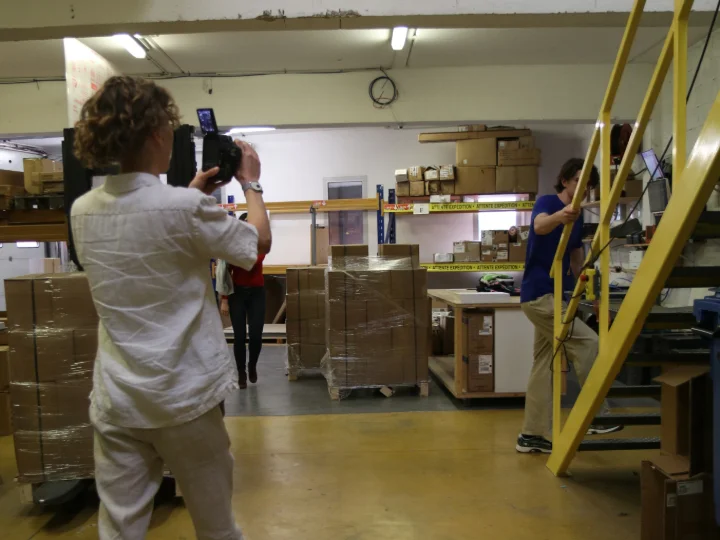
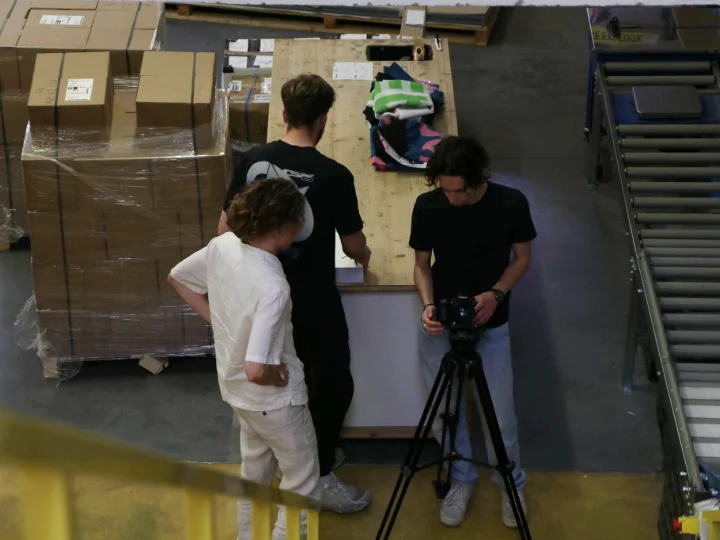
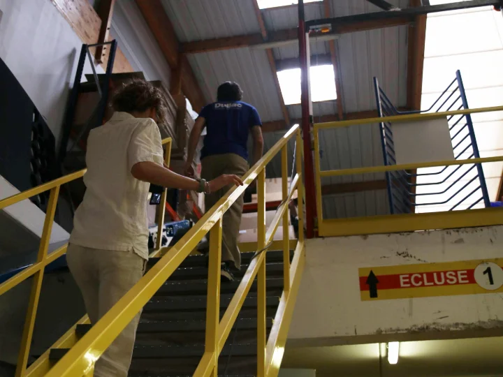

Présentation
Partenariat avec un pro de l'impression.
Dans le cadre de l'événement Osmo Create, nous avons établi un partenariat avec l'imprimerie professionnelle Dullac. L'entreprise nous a fourni des goodies et du matériel personnalisé à l'image de notre agence. En échange, nous avons réalisé une publicité directement tournée dans leurs locaux, afin de mettre en valeur leur savoir-faire et leurs prestations.

Mon rôle
Cadrage, montage, sound design.
J'ai participé au tournage avec plusieurs prises de vues à la caméra (focales 24–50 mm et 50 mm) et des plans dynamiques à la GoPro pour diversifier les angles. J'ai également assuré le montage complet du projet ainsi que le sound design, travaillant sur l'ambiance sonore pour renforcer l'impact de la publicité.

Matériel & outils
Polyvalence du setup.
Caméra avec focales courtes et fixes pour des images précises et esthétiques. GoPro pour des plans immersifs et originaux. Montage et sound design sur Adobe Premiere Pro.

Résultat